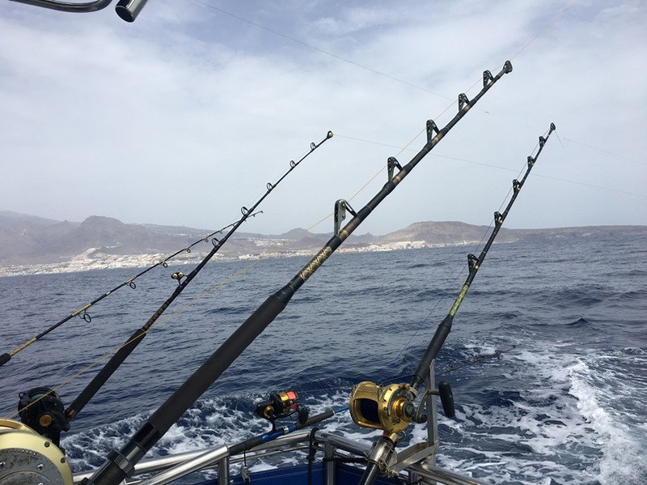
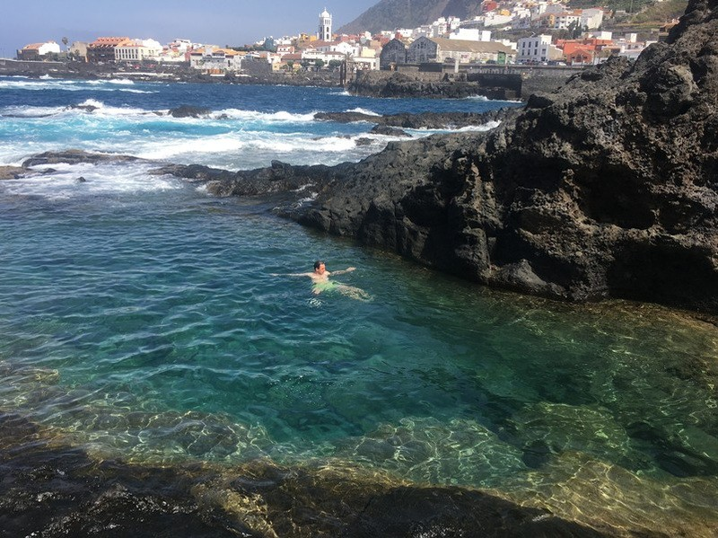

На рыбалке. Сказали, что был неудачный день, ловились только скаты (их отпускали).
Большинство рыб отпусают, но некоторые виды можно забирать.

Наш транспорт. Без машины было бы сложно перемещаться на острове.
Наша первая остановка на юге острове. Повезло с видом на балконе.
Пляж для сёрферов и прочих водных развлечений.
Пару фоток возле этого пляжа.
Павлик ловит крабиков и креветку.
И быстро согласился меня пофоткать.
Лучший рыбный ресторан, в котором я была.
Морепродукты на гриле и фирменная кортошка в мундире (ее подают везде на острове).
Остров кактусов, пальм и фикусов (тут фикусы, которые мы дома в горшках держим,
растут как большое дерево)
На рыбалке. Сказали, что был неудачный день, ловились только скаты (их отпускали).
Большинство рыб отпусают, но некоторые виды можно забирать.
К ужину мы все же кое-что словили.
Пляжи с черным песком.
На Тенерифе много природных бассейнов.

В кафе вместо меню на бумаге (или в папках) на столах QR-коды.
Большие кактусы и прочие суккуленты.

Город Гарачико (на западе острова) - одно из красивейших мест на Тенерифе.
Остановились в этом месте случайно.
Внизу природный бассейн. Идем туда.
Фотосессии по дороге.
Природный бассейн.
